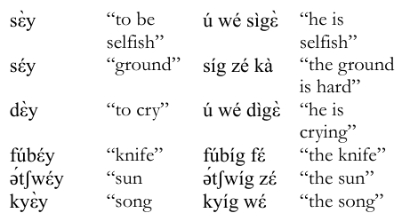
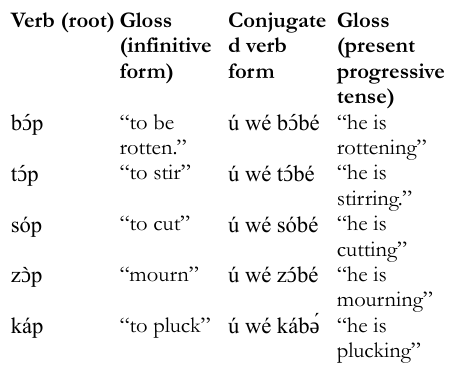

RAIL 2022Original text
Voicing in Ngamambo: A Descriptive perspective
This is the original text of the paper. Translations are linked above.
Proceedings of the 3rd Workshop on Resources for African Indigenous Languages (RAIL 2022), Journal of the Digital Humanities Association of Southern Africa.
Original text, shown under its licence (CC BY-SA 4.0). Reuse allowed with attribution; share adaptations alike. The translations on this site are by Ernst van Gassen (Arktos AI Lab).
Plain text for reuse, with its licence: English · LICENSE
Affiliations
Nyindem, Sirih-Nagang Nancy
University of Bamenda, North West Region
Asongwed Tah (Retired Lecturer)
Abstract
This paper describes voicing in Ngamambo, a semi Grassfields Bantu language in the North West Region of Cameroon. The language is classified under the Momo sub-language family (Eberhard, David M., Gray F. Simons and Charles D. Fenning, 2020). Ngamambo is unwritten, and research on the language is scanty. The only available literature on the language is by Asongwed & Hyman (1976)), Achiri-Taboh (2014) and Lem Atanga (2020) However, there has been some recent attempt by the Mbu Language Committee (MLC) to study the language. Interest in the study of Ngamambo stems from the imperative of undertaking a comprehensive description of the language. Preliminary research has revealed the existence of voicing in the language. Voicing is a process whereby the pronunciation of a word is influenced by one of the sounds. Data was obtained from Ngamambo native speakers (informants) over six months. The originality of this study resides in the fact that very little research has been carried out on the language. The authors of this paper discuss one aspect of the language and hope that subsequent studies will determine if voicing is also present in other Grassfields languages, especially the Momo sub-language family. The phonological process of voicing in Ngamambo has been observed when a voiceless sound becomes voiced depending on the environment. It is hoped that understanding this phenomenon would lead to a better understanding of voicing related to language learning.
Keywords
Voicing, Ngamambo, Standardisation
1 General Introduction
The study of voicing is essential in that it helps in the better understanding of connected speech processes. One of the primary goals of linguists is to describe intriguing phenomena in human languages. This paper describes voicing in Ngamambo as the process that takes place when two consonants with different phonological specifications for voicing occur in a word structure and influence the quality (sonority) of the vowels that precede them.
This is a descriptive study. The authors of this paper are members of the Mbu Language Committee (MLC) which was established in early 2021 to study Ngamambo. The MLC comprises 15 members (6 females and 9 males) ranging in age from 35 to 75 years. They are fluent native speakers of the language and provide the data which the two linguists use to analyse the language.
The Committee meets twice a month. Focused group discussions take place regularly to verify and cross-check the data collected.
The MLC has so far presented a proposed Ngamambo alphabet and a writing system for vetting to the Ngamambo-speaking community through two-well attended Mbu worldwide community zoom meetings.
This paper is divided into two sections: section 1 is a general introduction to the phenomenon of voicing, and section 2 discusses the locus of voicing in Ngamambo.
Research has shown that voicing usually occurs during fast speech (Nollan & Holst, 1993). In Ngamambo, the change in the voice quality of sounds occurs in both fast and slow speech. The target of the investigation is voiced and voiceless intervocalic stops at the word-final and phrase level. The research data is based on a recording of 13 native speakers of Ngamambo. The data is analysed in three blocks focusing on (1) word-final stops, (2) voicing at the word boundary and (3) voiceless process across the word boundary.
1.1 The concept of voicing
In phonology, voicing (or sonorisation) is a sound change where a voiceless consonant becomes voiced due to the influence of its phonological environment (Consonant voicing and devoicing, 2022). Voicing occurs when the larynx 's adductor muscles close the larynx, enabling the inner edges of the vocal cords to be in light contact. Pressure from the pulmonic airstream builds up, and subglottal pressure rises. As an effect, the vocal cords are blown slightly apart, and the compressed air below the glottis then flows through the narrow gaps in the larynx at a very high speed due to high subglottal pressure.
Voicing in sonorant consonants involves the escape of air freely through the oral and the nasal cavities, whereas voicing in obstruent involves the passage of air from the oral cavity partially or fully blocked, leading to a rapid build-up of supraglottal air pressure (Grijzenhout 2000, Dmitrieva 2014).
Stop consonants are produced by a complete closure in the vocal tract. The complete oral closure in oral stop is combined with a velic closure that prevents the air from escaping through the nasal cavity. As such, there is a rise in intra-oral pressure so that, when the closure is released, the compressed air escapes to the atmosphere with a stop burst, and pressure falls rapidly. According to Warren (1996), voiceless oral plosives have a volume of air of approximately 50ml. Also, voiced stops are always shorter than voiceless stops, and if voiced stops were as long as voiceless ones, then voicing would die out, since the subglottal and oral pressure would equalise. In summary, for voicing to take place, the vocal folds have to be in contact, and there has to be a sufficient pressure drop across the glottis.
1.2 Voicing in Ngamambo
Segments are not articulated in isolation in speech; rather, segments influence each other and are sensitive to context. Voicing is a phonological process that explains the varying qualities in sound production. It is the modification of the phonological features of a segment due to the influence of an adjacent segment. Different commands are given to the glottis to produce segments with different phonological specifications for voicing in running speech. In Ngamambo, we observe that a voiceless consonant becomes voiced at the word boundary. This process seems to be part of the native speaker ´ s intuition of the grammar of the language. For instance, in the "infinitive" form of the verb, the final segment is voiceless, and when, for example it is conjugated to mark tense, the segment becomes voiced at the word boundary. The examples below illustrate this phenomenon.
Table 1: Verbs ending in /k/ and with /ɔ/ preceding the /k/

Voicing occurs in Ngamambo when there is a boundary between the segments. When a voiceless consonant at the word boundary is followed by another segment, the voiceless sound becomes voiced. For instance, in the word gɔ̀k # gùgə́, the final plosive of the root form /k/ changes to /g/. As observed from the data above, this voicing phenomenon is expressed in this context when the verb form is conjugated to mark the progressive tense. Also, the vowel of the root verb changes from a mid-low back-rounded vowel /ɔ/ to a high-back round vowel /u/.
Table 2. Nouns ending in /k/ and with /ɔ/ preceding the /k/

Table 2 above shows that nouns ending in /k/ and preceded by /ɔ/ follow the same rule as verbs inflected for progressive tense. The common denominator in both cases is that the consonant change takes occurs across a word boundary and affects the preceding vowel.
Table 3: Verbs ending in /k/ and with /ə̀/ preceding the /k/.

In the case of verbs ending in /k/ and preceded by /ə/, when conjugated in the present progressive tense, the /k/ changes to /g/ and the middle low vowel /ə/ changes to a back /ɨ/.
Table 4: Nouns ending in /k/ and preceded by /ə́/.

Where the noun ends in /k/ preceded by /ə́/ across a word boundary, the /k/ changes to /g/ and the /ə́/ changes to /ɨ/.
Table 5: Words (nouns and verbs) ending in /y/. Consider the following:

Table 5 shows that voicing in Ngamambo is not limited to /k/ in word-final position changing to /g/ across word boundaries and causing a change in the vowel quality from /ɔ/ to /u/.
The examples show that /y/ in word-final position changes to /g/ and the preceding vowel /ɛ/, a front, mid low vowel changes to /i/, a front high vowel as in the case of /k/ where the preceding back mid low /ɔ/ vowel changes to the back high /u/. The data so far shows that the only vowel that precedes /y/ is /ɛ/ which, as shown, changes to /i/ while /y/ at the same time changes to /g/.
Table 6: Verbs ending in /t/

From the data in Table 6 it is noted that in Ngamambo, when verbs ending with /t/ are conjugated to mark the progressive tense, the voiceless alveolar oral stop /t/ changes to a fricative /r/. However, there is no concomitant change in the vowel quality as in the case of words ending /k/ In the case of /t/, the vowel in the root form of the verbs does not change.
Table 7: Nouns ending in /t/

The above examples in Table 7 show that nouns ending in /t/ do not change across word boundary, and there is also no vowel change. It was shown in table 5 that verbs ending in /t/ change when they are conjugated in the present progressive tense, but the vowel remains the same.
Table 8: Words ending in /p/

The data in Table 8 shows words ending with the voiceless bilabial plosive /p/. This voiceless plosive /p/ changes to its voiced counterpart /b/ when the word is conjugated to mark tense. It behaves the same way as verbs ending in /t/.
Table 9 above further confirms the existence of voicing in Ngamambo in that the final voiceless consonant /p/ in word final position changes to its voiced counterpart /b/ across a word boundary irrespective of the preceding vowel.
1.3 The locus of the trigger of voicing
This paper has adduced evidence to show that words ending in /t/,/p/ and /k/ undergo some form of voicing. However, there seem to be two types of voicing: one involving /t/ and /p/ where, when they are in final position, they maintain their voiceless character. However, across word boundaries, they become voiced but without a change in the vowel (quality or sonority of the vowel). It is proposed that this form of voicing in Ngamamba be called partial voicing since it only involves the consonant change.
The other form of voicing involves /k/ and /y/ in word-final position and their change to /g/ across word boundaries. In this type of voicing, the /ɛ/ in front of /y/ changes to /i/, the /ɔ/ in front of /k/ changes to /u/ and the /ə/ in front of /k/ changes to /ɨ/ across a word boundary.
It is proposed that this second type of voicing be called full voicing because it entails both a consonant and vowel change.

1.4 Locus of the Trigger
The question arises as to whether the consonants /k/ and /y/ trigger the vowel change across word boundaries or the vowel triggers the consonant change across word boundaries. The locus of the trigger of voicing in Ngamambo would seem in some cases to be dependent on the class of the word; whether it is a verb or a noun as has been shown in various examples.
Furthermore, it would seem from the data that in some cases the vowel triggers the consonant change rather than the other way round where one might also posit that the consonant triggers the vowel change. For example,

The argument in this case is that the word-final consonant generally remains constant until the vowel that precedes it changes. Usually the vowel that precedes the word-final consonant is not high. However, when it changes to become high, the word-final consonant (generally a voiceless consonant) changes to its voiced counterpart to "harmonize" the sonority of the new high vowel that has taken the place of the lower vowel.
Word category
From the data in this paper, it is clear that voicing occurs with verbs when inflected to mark tense (progressive tense). It also occurs with nouns. Further research will be undertaken to better understand the locus of the trigger of voicing in Ngamambo.
Devoicing
While this paper is on voicing in Ngamambo, it is important to point out that there are instances of devoicing in the language. It has been shown that some generally voiceless consonants in word-final position become voiced across word boundaries and the vowel quality of the vowels that were in front of them also change. Devoicing occurs where sounds lose their voicing quality when they are either preceded or followed by specific consonantal or vowel segments (Fujimoto, 2015). This seems to be the case in Ngamambo. Consider the example below:
Table 11: Verbs with /ə/

From the data in Table 11, the quality of the vowel (the sonority of the vowel) changes from a front high unrounded vowel /i/ to a front midhigh unrounded vowel /ɛ́/ which shows that the high vowel /ı́/ has lost some of it high quality to become a mid vowel /ɛ́/.
1.5 Conclusion
This paper has attempted to describe the phonological phenomenon of voicing in Ngamambo. It has analysed the manifestation and trigger of the locus of voicing in the language. The study establishes that word-final voiceless consonants become voiced at a word boundary. Furthermore, the effect of the voicing is manifested in the quality of the vowels that precede the consonants.
This research is work in progress and it is hoped that further research will shed more light on the phenomenon of voicing in Ngamambo.
References
Adda-Decker, M. & Lori L. (1999). Pronunciation variants across system configuration, language and speaking style. Speech Communication 29 (2-4): 83-98.
Best, C. T. & Pierre Hallé. (2010). Perception of initial obstruent voicing is influenced by the gestural organization. J. Phonetics 38: 109-126.
Consonant voicing and devoicing. (2022, October 9). In Wikipedia. https://en.wikipedia.org/wiki/Consonant_voicing_and_devoicing.
Coretta, S. (2019). An exploratory study of voicing-related differences in vowel duration as a compensatory temporal adjustment in Italian and Polish. Glossa: A Journal of General Linguistics, 4(1), 125. DOI: http://doi.org/10.5334/gjgl.869.
Chen, M. (1970). Vowel length variation as a function of the voicing of the consonant environment. Phonetica 22,129-159. doi: 10.1159/000259312.
Dawood, H. S. A. & Ahmad A. (2015). Assimilation of Consonants in English and Assimilation of the Definite Article in Arabic. American Research Journal of English and Literature, Volume 1, Issue 4. ISSN 2378-9026.
Keating, P. A. (1984). Phonetic and phonological representation of stop voicing. Language. 60:286-319.
Dmitrieva, O. (2014). "Final voicing and devoicing in American English" . The Journal of the Acoustical Society of America. 136 (4): 2174. Bibcode:2014ASAJ..136.2174D. doi:10.1121/1.4899867.
Fujimoto, M. (2015). 4 vowel devoicing. In H. Kubozono (Ed.), Handbook of Japanese phonetics and Phonology (PP. 167.214). Berlin, Müchen, Boston: De Gruyter Mouton. https//doi. Org/10.1515/9781614511984.167.
Grijzenhout, J. (2000). "Voicing and devoicing in English, German, and Dutch: Evidence for domain-specific identity constraints" . CiteSeerX 10.1.1.141.5510
Kulikov, V. (2012). "Voicing and voice assimilation in Russian stops. " PhD (Doctor of Philosophy) thesis, University of Iowa. https://doi.org/10.17077/etd.r6ib0d07.
Hallé, P. & Martine A. -D. (2012). Voice assimilation in French obstruents: A gradient or a categorical process? Tones and features: A festschrift for Nick Clements, De Gruyter, pp.149-175, 2011. ffhalshs-00684437.
Wetzels, W. L. & Joan M. (2001). The typology of voicing and devoicing. Language. 77:207-244.
Voicing in Ngamambo: A Descriptive perspective
La sonorisation en Ngamambo : une perspective descriptive
Affiliations
Nyindem, Sirih-Nagang Nancy
University of Bamenda, North West Region
Asongwed Tah (Retired Lecturer)
Affiliations
Nyindem, Sirih-Nagang Nancy
University of Bamenda, North West Region
Asongwed Tah (Retired Lecturer)
Abstract
Résumé
This paper describes voicing in Ngamambo, a semi Grassfields Bantu language in the North West Region of Cameroon. The language is classified under the Momo sub-language family (Eberhard, David M., Gray F. Simons and Charles D. Fenning, 2020). Ngamambo is unwritten, and research on the language is scanty. The only available literature on the language is by Asongwed & Hyman (1976)), Achiri-Taboh (2014) and Lem Atanga (2020) However, there has been some recent attempt by the Mbu Language Committee (MLC) to study the language. Interest in the study of Ngamambo stems from the imperative of undertaking a comprehensive description of the language. Preliminary research has revealed the existence of voicing in the language. Voicing is a process whereby the pronunciation of a word is influenced by one of the sounds. Data was obtained from Ngamambo native speakers (informants) over six months. The originality of this study resides in the fact that very little research has been carried out on the language. The authors of this paper discuss one aspect of the language and hope that subsequent studies will determine if voicing is also present in other Grassfields languages, especially the Momo sub-language family. The phonological process of voicing in Ngamambo has been observed when a voiceless sound becomes voiced depending on the environment. It is hoped that understanding this phenomenon would lead to a better understanding of voicing related to language learning.
Cet article décrit la sonorisation dans le Ngamambo, une langue bantoue semi-Grassfields de la région du Nord-Ouest du Cameroun. La langue est classée dans la famille des sous-langues Momo (Eberhard, David M., Gray F. Simons et Charles D. Fenning, 2020). Ngamambo n'est pas écrit, et les recherches sur la langue sont rares. La seule littérature disponible sur la langue est par Asongwed & Hyman (1976), Achiri-Taboh (2014) et Lem Atanga (2020) Cependant, il y a eu une tentative récente par le Mbu Language Committee (MLC) pour étudier la langue. L'intérêt pour l'étude de Ngamambo découle de l'impératif d'entreprendre une description complète de la langue. Des recherches préliminaires ont révélé l'existence de la sonorisation dans la langue. La sonorisation est un processus par lequel la prononciation d'un mot est influencée par l'un des sons. Les données ont été obtenues auprès de locuteurs natifs du Ngamambo (informateurs) sur une période de six mois. L'originalité de cette étude réside dans le fait que très peu de recherches ont été effectuées sur la langue. Les auteurs de cet article discutent d'un aspect de la langue et espèrent que les études ultérieures détermineront si la sonorisation est également présente dans d'autres langues Grassfields, en particulier la sous-famille linguistique Momo. Le processus phonologique de sonorisation dans le Ngamambo a été observé lorsqu'un son non voisé devient voisé en fonction de l'environnement. On espère que la compréhension de ce phénomène mènera à une meilleure compréhension de la sonorisation liée à l'apprentissage des langues.
Keywords
Mots-clés
Voicing, Ngamambo, Standardisation
Sonorisation, ngamambo, standardisation
1 General Introduction
1 Introduction générale
The study of voicing is essential in that it helps in the better understanding of connected speech processes. One of the primary goals of linguists is to describe intriguing phenomena in human languages. This paper describes voicing in Ngamambo as the process that takes place when two consonants with different phonological specifications for voicing occur in a word structure and influence the quality (sonority) of the vowels that precede them.
L'étude de la sonorisation est essentielle en ce sens qu'elle aide à mieux comprendre les processus de la parole continue. L'un des principaux objectifs des linguistes est de décrire des phénomènes intrigants dans les langues humaines. Cet article décrit la sonorisation en Ngamambo comme le processus qui se produit lorsque deux consonnes ayant des spécifications phonologiques différentes pour la sonorisation apparaissent dans une structure de mot et influencent la qualité (sonorité) des voyelles qui les précèdent.
This is a descriptive study. The authors of this paper are members of the Mbu Language Committee (MLC) which was established in early 2021 to study Ngamambo. The MLC comprises 15 members (6 females and 9 males) ranging in age from 35 to 75 years. They are fluent native speakers of the language and provide the data which the two linguists use to analyse the language.
Il s'agit d'une étude descriptive. Les auteurs de cet article sont membres du Mbu Language Committee (MLC) qui a été créé au début de l'année 2021 pour étudier le Ngamambo. Le MLC comprend 15 membres (6 femmes et 9 hommes) dont l'âge varie de 35 à 75 ans. Ils sont des locuteurs natifs fluides de la langue et fournissent les données que les deux linguistes utilisent pour analyser la langue.
The Committee meets twice a month. Focused group discussions take place regularly to verify and cross-check the data collected.
Le Comité se réunit deux fois par mois. Des discussions de groupe ciblées ont lieu régulièrement pour vérifier et croiser les données collectées.
The MLC has so far presented a proposed Ngamambo alphabet and a writing system for vetting to the Ngamambo-speaking community through two-well attended Mbu worldwide community zoom meetings.
Le MLC a jusqu’à présent présenté une proposition d’alphabet Ngamambo et un système d’écriture pour vérification à la communauté de langue Ngamambo à travers deux réunions communautaires Mbu bien fréquentées dans le monde entier.
This paper is divided into two sections: section 1 is a general introduction to the phenomenon of voicing, and section 2 discusses the locus of voicing in Ngamambo.
Ce document est divisé en deux sections : la section 1 est une introduction générale au phénomène de la sonorisation, et la section 2 discute du locus de la sonorisation en Ngamambo.
Research has shown that voicing usually occurs during fast speech (Nollan & Holst, 1993). In Ngamambo, the change in the voice quality of sounds occurs in both fast and slow speech. The target of the investigation is voiced and voiceless intervocalic stops at the word-final and phrase level. The research data is based on a recording of 13 native speakers of Ngamambo. The data is analysed in three blocks focusing on (1) word-final stops, (2) voicing at the word boundary and (3) voiceless process across the word boundary.
La recherche a démontré que la sonorisation se produit habituellement pendant la parole rapide (Nollan & Holst, 1993). Dans Ngamambo, le changement dans la qualité vocale des sons se produit à la fois dans la parole rapide et lente. La cible de l'investigation est les occlusives intervocaliques voisées et non voisées au niveau de la fin de mot et de la phrase. Les données de recherche sont basées sur un enregistrement de 13 locuteurs natifs de Ngamambo. Les données sont analysées en trois blocs se concentrant sur (1) les occlusives finales, (2) la sonorisation à la frontière de mot et (3) le processus de dévoisement à travers la frontière de mot.
1.1 The concept of voicing
1.1 Le concept de voisement
In phonology, voicing (or sonorisation) is a sound change where a voiceless consonant becomes voiced due to the influence of its phonological environment (Consonant voicing and devoicing, 2022). Voicing occurs when the larynx 's adductor muscles close the larynx, enabling the inner edges of the vocal cords to be in light contact. Pressure from the pulmonic airstream builds up, and subglottal pressure rises. As an effect, the vocal cords are blown slightly apart, and the compressed air below the glottis then flows through the narrow gaps in the larynx at a very high speed due to high subglottal pressure.
En phonologie, la sonorisation (ou voicing) est un changement de son où une consonne sourde devient sonore sous l'influence de son environnement phonologique (Consonant voicing and devoicing, 2022). La sonorisation se produit lorsque les muscles adducteurs du larynx ferment le larynx, permettant aux bords intérieurs des cordes vocales d'être en contact léger. La pression du flux d'air pulmonaire s'accumule et la pression sous-glottale augmente. En conséquence, les cordes vocales sont légèrement écartées, et l'air comprimé sous la glottis s'écoule ensuite à travers les étroites fentes du larynx à une vitesse très élevée en raison de la pression sous-glottique élevée.
Voicing in sonorant consonants involves the escape of air freely through the oral and the nasal cavities, whereas voicing in obstruent involves the passage of air from the oral cavity partially or fully blocked, leading to a rapid build-up of supraglottal air pressure (Grijzenhout 2000, Dmitrieva 2014).
La sonorisation des consonnes sonorantes implique que l’air s’échappe librement par les cavités buccale et nasale, tandis que la sonorisation des consonnes obstruantes implique que le passage de l’air de la cavité buccale soit partiellement ou totalement bloqué, ce qui entraîne une accumulation rapide de pression d’air supraglottique (Grijzenhout 2000, Dmitrieva 2014).
Stop consonants are produced by a complete closure in the vocal tract. The complete oral closure in oral stop is combined with a velic closure that prevents the air from escaping through the nasal cavity. As such, there is a rise in intra-oral pressure so that, when the closure is released, the compressed air escapes to the atmosphere with a stop burst, and pressure falls rapidly. According to Warren (1996), voiceless oral plosives have a volume of air of approximately 50ml. Also, voiced stops are always shorter than voiceless stops, and if voiced stops were as long as voiceless ones, then voicing would die out, since the subglottal and oral pressure would equalise. In summary, for voicing to take place, the vocal folds have to be in contact, and there has to be a sufficient pressure drop across the glottis.
Les consonnes occlusives sont produites par une fermeture complète dans le conduit vocal. La fermeture buccale complète dans l'occlusive buccale est combinée avec une fermeture vélaire qui empêche l'air de s'échapper par la cavité nasale. Ainsi, il y a une augmentation de la pression intra-orale de sorte que, lorsque la fermeture est relâchée, l'air comprimé s'échappe dans l'atmosphère avec une explosion de l'occlusive, et la pression chute rapidement. Selon Warren (1996), les occlusives sourdes orales ont un volume d'air d'environ 50 ml. De plus, les occlusives sonores sont toujours plus courtes que les occlusives sourdes, et si les occlusives sonores étaient aussi longues que les occlusives sourdes, alors la sonorisation disparaîtrait, puisque la pression sous-glottique et orale s'égaliserait. En résumé, pour que la sonorisation ait lieu, les cordes vocales doivent être en contact, et il doit y avoir une chute de pression suffisante à travers la glotte.
1.2 Voicing in Ngamambo
1.2 La sonorisation en Ngamambo
Segments are not articulated in isolation in speech; rather, segments influence each other and are sensitive to context. Voicing is a phonological process that explains the varying qualities in sound production. It is the modification of the phonological features of a segment due to the influence of an adjacent segment. Different commands are given to the glottis to produce segments with different phonological specifications for voicing in running speech. In Ngamambo, we observe that a voiceless consonant becomes voiced at the word boundary. This process seems to be part of the native speaker ´ s intuition of the grammar of the language. For instance, in the "infinitive" form of the verb, the final segment is voiceless, and when, for example it is conjugated to mark tense, the segment becomes voiced at the word boundary. The examples below illustrate this phenomenon.
Les segments ne sont pas articulés de manière isolée dans la parole ; plutôt, les segments s'influencent mutuellement et sont sensibles au contexte. La sonorisation est un processus phonologique qui explique les différentes qualités de la production sonore. C'est la modification des caractéristiques phonologiques d'un segment due à l'influence d'un segment adjacent. Différentes commandes sont données à la glotte pour produire des segments avec différentes spécifications phonologiques pour le voisement dans la parole continue. En Ngamambo, on observe qu'une consonne sourde devient sonore à la frontière de mot. Ce processus semble faire partie de l'intuition du locuteur natif concernant la grammaire de la langue. Par exemple, dans la forme « infinitive » du verbe, le segment final est non voisé, et lorsque, par exemple, il est conjugué pour marquer le temps, le segment devient voisé à la frontière de mot. Les exemples ci-dessous illustrent ce phénomène.
Table 1: Verbs ending in /k/ and with /ɔ/ preceding the /k/
Tableau 1 : Verbes se terminant par /k/ et avec /ɔ/ précédant le /k/
Voicing occurs in Ngamambo when there is a boundary between the segments. When a voiceless consonant at the word boundary is followed by another segment, the voiceless sound becomes voiced. For instance, in the word gɔ̀k # gùgə́, the final plosive of the root form /k/ changes to /g/. As observed from the data above, this voicing phenomenon is expressed in this context when the verb form is conjugated to mark the progressive tense. Also, the vowel of the root verb changes from a mid-low back-rounded vowel /ɔ/ to a high-back round vowel /u/.
La sonorisation se produit en Ngamambo lorsqu'il y a une frontière entre les segments. Lorsqu'une consonne sourde à la frontière de mot est suivie par un autre segment, le son sourd devient sonore. Par exemple, dans le mot gɔ̀k # gùgə́, l'occlusive finale de la forme de la racine /k/ se transforme en /g/. Comme on peut l'observer à partir des données ci-dessus, ce phénomène de sonorisation s'exprime dans ce contexte lorsque la forme verbale est conjuguée pour marquer le temps progressif. De plus, la voyelle de la racine verbale passe d'une voyelle mi-ouverte postérieure arrondie /ɔ/ à une voyelle haute postérieure arrondie /u/.
Table 2. Nouns ending in /k/ and with /ɔ/ preceding the /k/
Tableau 2. Noms se terminant en /k/ et avec /ɔ/ précédant le /k/
Table 2 above shows that nouns ending in /k/ and preceded by /ɔ/ follow the same rule as verbs inflected for progressive tense. The common denominator in both cases is that the consonant change takes occurs across a word boundary and affects the preceding vowel.
Le tableau 2 ci-dessus montre que les noms se terminant par /k/ et précédés de /ɔ/ suivent la même règle que les verbes fléchis au temps progressif. Le dénominateur commun dans les deux cas est que le changement de consonne se produit à travers une frontière de mot et affecte la voyelle précédente.
Table 3: Verbs ending in /k/ and with /ə̀/ preceding the /k/.
Tableau 3 : Verbes se terminant par /k/ et avec /ə̀/ précédant le /k/.
In the case of verbs ending in /k/ and preceded by /ə/, when conjugated in the present progressive tense, the /k/ changes to /g/ and the middle low vowel /ə/ changes to a back /ɨ/.
Dans le cas des verbes se terminant par /k/ et précédés de /ə/, lorsqu'ils sont conjugués au temps présent progressif, le /k/ se transforme en /g/ et la voyelle basse médiane /ə/ se transforme en un /ɨ/ postérieur.
Table 4: Nouns ending in /k/ and preceded by /ə́/.
Tableau 4 : Noms se terminant par /k/ et précédés de /ə́/.
Where the noun ends in /k/ preceded by /ə́/ across a word boundary, the /k/ changes to /g/ and the /ə́/ changes to /ɨ/.
Lorsque le nom se termine par /k/ précédé de /ə́/ à travers une frontière de mot, le /k/ se transforme en /g/ et le /ə́/ se transforme en /ɨ/.
Table 5: Words (nouns and verbs) ending in /y/. Consider the following:
Tableau 5 : Mots (noms et verbes) se terminant par /y/. Considérez ce qui suit :
Table 5 shows that voicing in Ngamambo is not limited to /k/ in word-final position changing to /g/ across word boundaries and causing a change in the vowel quality from /ɔ/ to /u/.
Le Tableau 5 montre que le voisement en ngamambo ne se limite pas à /k/ en position finale de mot qui se transforme en /g/ à travers les frontières de mot et provoque un changement de la qualité de la voyelle de /ɔ/ à /u/.
The examples show that /y/ in word-final position changes to /g/ and the preceding vowel /ɛ/, a front, mid low vowel changes to /i/, a front high vowel as in the case of /k/ where the preceding back mid low /ɔ/ vowel changes to the back high /u/. The data so far shows that the only vowel that precedes /y/ is /ɛ/ which, as shown, changes to /i/ while /y/ at the same time changes to /g/.
Les exemples montrent que /y/ en position finale de mot se transforme en /g/ et que la voyelle précédente /ɛ/, une voyelle antérieure mi-basse, se transforme en /i/, une voyelle antérieure haute, comme dans le cas de /k/ où la voyelle postérieure mi-basse /ɔ/ se transforme en la voyelle postérieure haute /u/. Les données jusqu'ici montrent que la seule voyelle qui précède /y/ est /ɛ/ qui, comme on l'a vu, se transforme en /i/ tandis que /y/ se transforme en même temps en /g/.
Table 6: Verbs ending in /t/
Tableau 6: Verbes se terminant par /t/
From the data in Table 6 it is noted that in Ngamambo, when verbs ending with /t/ are conjugated to mark the progressive tense, the voiceless alveolar oral stop /t/ changes to a fricative /r/. However, there is no concomitant change in the vowel quality as in the case of words ending /k/ In the case of /t/, the vowel in the root form of the verbs does not change.
À partir des données du tableau 6, on note que dans le Ngamambo, lorsque les verbes se terminant par /t/ sont conjugués pour marquer le temps progressif, l'occlusive alvéolaire sourde orale /t/ change en une fricative /r/. Cependant, il n'y a pas de changement concomitant dans la qualité de la voyelle comme dans le cas des mots se terminant par /k/. Dans le cas de /t/, la voyelle dans la forme racine des verbes ne change pas.
Table 7: Nouns ending in /t/
Tableau 7 : Noms se terminant par /t/
The above examples in Table 7 show that nouns ending in /t/ do not change across word boundary, and there is also no vowel change. It was shown in table 5 that verbs ending in /t/ change when they are conjugated in the present progressive tense, but the vowel remains the same.
Les exemples ci-dessus dans le tableau 7 montrent que les noms se terminant par /t/ ne changent pas à travers la limite du mot, et il n'y a pas non plus de changement de voyelle. Il a été montré dans le tableau 5 que les verbes se terminant par /t/ changent lorsqu'ils sont conjugués au temps progressif présent, mais la voyelle reste la même.
Table 8: Words ending in /p/
Tableau 8 : Mots se terminant par /p/
The data in Table 8 shows words ending with the voiceless bilabial plosive /p/. This voiceless plosive /p/ changes to its voiced counterpart /b/ when the word is conjugated to mark tense. It behaves the same way as verbs ending in /t/.
Les données du tableau 8 montrent des mots se terminant par l'occlusive bilabiale sourde /p/. Cette occlusive sourde /p/ se change en sa contrepartie voisée /b/ lorsque le mot est conjugué pour marquer le temps. Il se comporte de la même manière que les verbes se terminant en /t/.
Table 9 above further confirms the existence of voicing in Ngamambo in that the final voiceless consonant /p/ in word final position changes to its voiced counterpart /b/ across a word boundary irrespective of the preceding vowel.
Le tableau 9 ci-dessus confirme en outre l’existence d’une sonorisation en ngamambo, en ce sens que la consonne sourde finale /p/ en fin de mot change en son homologue sonore /b/ au-delà d’une limite de mot, indépendamment de la voyelle précédente.
1.3 The locus of the trigger of voicing
1.3 Le lieu du déclencheur de la sonorisation
This paper has adduced evidence to show that words ending in /t/,/p/ and /k/ undergo some form of voicing. However, there seem to be two types of voicing: one involving /t/ and /p/ where, when they are in final position, they maintain their voiceless character. However, across word boundaries, they become voiced but without a change in the vowel (quality or sonority of the vowel). It is proposed that this form of voicing in Ngamamba be called partial voicing since it only involves the consonant change.
Cet article a apporté des preuves montrant que les mots se terminant par /t/, /p/ et /k/ subissent une forme de sonorisation. Cependant, il semble exister deux types de voisement : l'un impliquant /t/ et /p/ où, lorsqu'ils sont en position finale, ils conservent leur caractère non voisé. Cependant, à travers les limites des mots, ils deviennent voisés mais sans changement de la voyelle (qualité ou sonorité de la voyelle). Il est proposé que cette forme de voisement en Ngamamba soit appelée voisement partiel puisqu'elle n'implique que le changement de consonne.
The other form of voicing involves /k/ and /y/ in word-final position and their change to /g/ across word boundaries. In this type of voicing, the /ɛ/ in front of /y/ changes to /i/, the /ɔ/ in front of /k/ changes to /u/ and the /ə/ in front of /k/ changes to /ɨ/ across a word boundary.
L'autre forme de sonorisation implique /k/ et /y/ en position finale de mot et leur changement en /g/ à travers les limites de mot. Dans ce type de voisement, le /ɛ/ devant /y/ se change en /i/, le /ɔ/ devant /k/ se change en /u/ et le /ə/ devant /k/ se change en /ɨ/ à travers une frontière de mot.
It is proposed that this second type of voicing be called full voicing because it entails both a consonant and vowel change.
Il est proposé que ce second type de voisement soit appelé voisement complet car il implique à la fois un changement de consonne et de voyelle.
1.4 Locus of the Trigger
1.4 Locus du déclencheur
The question arises as to whether the consonants /k/ and /y/ trigger the vowel change across word boundaries or the vowel triggers the consonant change across word boundaries. The locus of the trigger of voicing in Ngamambo would seem in some cases to be dependent on the class of the word; whether it is a verb or a noun as has been shown in various examples.
La question se pose de savoir si les consonnes /k/ et /y/ déclenchent le changement de voyelle à travers les limites des mots ou si la voyelle déclenche le changement de consonne à travers les limites des mots. Le lieu du déclencheur du voisement en ngamambo semblerait dans certains cas dépendre de la classe du mot ; qu'il s'agisse d'un verbe ou d'un nom, comme cela a été montré dans divers exemples.
Furthermore, it would seem from the data that in some cases the vowel triggers the consonant change rather than the other way round where one might also posit that the consonant triggers the vowel change. For example,
En outre, il semblerait d'après les données que dans certains cas la voyelle déclenche le changement de consonne plutôt que l'inverse où on pourrait également postuler que la consonne déclenche le changement de voyelle. Par exemple,
The argument in this case is that the word-final consonant generally remains constant until the vowel that precedes it changes. Usually the vowel that precedes the word-final consonant is not high. However, when it changes to become high, the word-final consonant (generally a voiceless consonant) changes to its voiced counterpart to "harmonize" the sonority of the new high vowel that has taken the place of the lower vowel.
L'argument dans ce cas est que la consonne finale reste généralement constante jusqu'à ce que la voyelle qui la précède change. Habituellement, la voyelle qui précède la consonne finale n'est pas élevée. Cependant, lorsqu'elle change pour devenir haute, la consonne finale de mot (généralement une consonne sourde) se transforme en sa contrepartie voisée pour « harmoniser » la sonorité de la nouvelle voyelle haute qui a pris la place de la voyelle plus basse.
Word category
Catégorie de mot
From the data in this paper, it is clear that voicing occurs with verbs when inflected to mark tense (progressive tense). It also occurs with nouns. Further research will be undertaken to better understand the locus of the trigger of voicing in Ngamambo.
À partir des données de cet article, il est clair que la sonorisation se produit avec les verbes lorsqu'ils sont conjugués pour marquer le temps (temps progressif). Il se produit également avec les noms. Des recherches supplémentaires seront entreprises pour mieux comprendre le lieu du déclencheur de la sonorisation en Ngamambo.
Devoicing
Dévoisement
While this paper is on voicing in Ngamambo, it is important to point out that there are instances of devoicing in the language. It has been shown that some generally voiceless consonants in word-final position become voiced across word boundaries and the vowel quality of the vowels that were in front of them also change. Devoicing occurs where sounds lose their voicing quality when they are either preceded or followed by specific consonantal or vowel segments (Fujimoto, 2015). This seems to be the case in Ngamambo. Consider the example below:
Bien que cet article traite de la sonorisation en Ngamambo, il est important de noter qu'il existe des cas de désonorisation dans cette langue. Il a été démontré que certaines consonnes généralement sourdes en position finale de mot deviennent voisées à travers les limites des mots et que la qualité vocalique des voyelles qui les précèdent change également. La désonorisation (ou le dévoisement) se produit lorsque les sons perdent leur qualité de voisement lorsqu'ils sont précédés ou suivis par des segments consonantiques ou voyelles spécifiques (Fujimoto, 2015). Cela semble être le cas en Ngamambo. Considérez l'exemple ci-dessous:
Table 11: Verbs with /ə/
Tableau 11 : Verbes avec /ə/
From the data in Table 11, the quality of the vowel (the sonority of the vowel) changes from a front high unrounded vowel /i/ to a front midhigh unrounded vowel /ɛ́/ which shows that the high vowel /ı́/ has lost some of it high quality to become a mid vowel /ɛ́/.
D'après les données du Tableau 11, la qualité de la voyelle (la sonorité de la voyelle) passe d'une voyelle antérieure haute non arrondie /i/ à une voyelle antérieure mi-haute non arrondie /ɛ́/, ce qui montre que la voyelle haute /ı́/ a perdu une partie de sa qualité haute pour devenir une voyelle moyenne /ɛ́/.
1.5 Conclusion
1.5 Conclusion
This paper has attempted to describe the phonological phenomenon of voicing in Ngamambo. It has analysed the manifestation and trigger of the locus of voicing in the language. The study establishes that word-final voiceless consonants become voiced at a word boundary. Furthermore, the effect of the voicing is manifested in the quality of the vowels that precede the consonants.
Cet article a tenté de décrire le phénomène phonologique de la sonorisation dans la langue Ngamambo. Il a analysé la manifestation et le déclencheur du lieu de la sonorisation dans la langue. L’étude établit que les consonnes sourdes de fin de mot deviennent sonores à une limite de mot. De plus, l'effet de la sonorisation se manifeste dans la qualité des voyelles qui précèdent les consonnes.
This research is work in progress and it is hoped that further research will shed more light on the phenomenon of voicing in Ngamambo.
Cette recherche est en cours et il est espéré que des recherches supplémentaires éclaireront davantage le phénomène de la sonorisation en Ngamambo.
References
Références
Adda-Decker, M. & Lori L. (1999). Pronunciation variants across system configuration, language and speaking style. Speech Communication 29 (2-4): 83-98.
Best, C. T. & Pierre Hallé. (2010). Perception of initial obstruent voicing is influenced by the gestural organization. J. Phonetics 38: 109-126.
Consonant voicing and devoicing. (2022, October 9). In Wikipedia. https://en.wikipedia.org/wiki/Consonant_voicing_and_devoicing.
Coretta, S. (2019). An exploratory study of voicing-related differences in vowel duration as a compensatory temporal adjustment in Italian and Polish. Glossa: A Journal of General Linguistics, 4(1), 125. DOI: http://doi.org/10.5334/gjgl.869.
Chen, M. (1970). Vowel length variation as a function of the voicing of the consonant environment. Phonetica 22,129-159. doi: 10.1159/000259312.
Dawood, H. S. A. & Ahmad A. (2015). Assimilation of Consonants in English and Assimilation of the Definite Article in Arabic. American Research Journal of English and Literature, Volume 1, Issue 4. ISSN 2378-9026.
Keating, P. A. (1984). Phonetic and phonological representation of stop voicing. Language. 60:286-319.
Dmitrieva, O. (2014). "Final voicing and devoicing in American English" . The Journal of the Acoustical Society of America. 136 (4): 2174. Bibcode:2014ASAJ..136.2174D. doi:10.1121/1.4899867.
Fujimoto, M. (2015). 4 vowel devoicing. In H. Kubozono (Ed.), Handbook of Japanese phonetics and Phonology (PP. 167.214). Berlin, Müchen, Boston: De Gruyter Mouton. https//doi. Org/10.1515/9781614511984.167.
Grijzenhout, J. (2000). "Voicing and devoicing in English, German, and Dutch: Evidence for domain-specific identity constraints" . CiteSeerX 10.1.1.141.5510
Kulikov, V. (2012). "Voicing and voice assimilation in Russian stops. " PhD (Doctor of Philosophy) thesis, University of Iowa. https://doi.org/10.17077/etd.r6ib0d07.
Hallé, P. & Martine A. -D. (2012). Voice assimilation in French obstruents: A gradient or a categorical process? Tones and features: A festschrift for Nick Clements, De Gruyter, pp.149-175, 2011. ffhalshs-00684437.
Wetzels, W. L. & Joan M. (2001). The typology of voicing and devoicing. Language. 77:207-244.
Voicing in Ngamambo: A Descriptive perspective
Utoaji sauti katika Kingamambo: Mtazamo wa Kifafanuzi
Affiliations
Nyindem, Sirih-Nagang Nancy
University of Bamenda, North West Region
Asongwed Tah (Retired Lecturer)
Taasisi
Nyindem, Sirih-Nagang Nancy
University of Bamenda, North West Region
Asongwed Tah (Retired Lecturer)
Abstract
Muhtasari
This paper describes voicing in Ngamambo, a semi Grassfields Bantu language in the North West Region of Cameroon. The language is classified under the Momo sub-language family (Eberhard, David M., Gray F. Simons and Charles D. Fenning, 2020). Ngamambo is unwritten, and research on the language is scanty. The only available literature on the language is by Asongwed & Hyman (1976)), Achiri-Taboh (2014) and Lem Atanga (2020) However, there has been some recent attempt by the Mbu Language Committee (MLC) to study the language. Interest in the study of Ngamambo stems from the imperative of undertaking a comprehensive description of the language. Preliminary research has revealed the existence of voicing in the language. Voicing is a process whereby the pronunciation of a word is influenced by one of the sounds. Data was obtained from Ngamambo native speakers (informants) over six months. The originality of this study resides in the fact that very little research has been carried out on the language. The authors of this paper discuss one aspect of the language and hope that subsequent studies will determine if voicing is also present in other Grassfields languages, especially the Momo sub-language family. The phonological process of voicing in Ngamambo has been observed when a voiceless sound becomes voiced depending on the environment. It is hoped that understanding this phenomenon would lead to a better understanding of voicing related to language learning.
Makala hii inaelezea ughuna katika Ngamambo, lugha nusu ya Bantu ya Grassfields katika Mkoa wa Kaskazini Magharibi wa Kamerun. Lugha hiyo imeainishwa chini ya familia ndogo ya lugha ya Momo (Eberhard, David M., Gray F. Simons na Charles D. Fenning, 2020). Kingamambo hakijaandikwa, na utafiti kuhusu lugha hiyo ni haba. Machapisho pekee yaliyopo kuhusu lugha hiyo ni ya Asongwed & Hyman (1976)), Achiri-Taboh (2014) na Lem Atanga (2020). Hata hivyo, kumekuwa na jaribio la hivi karibuni la Kamati ya Lugha ya Mbu (MLC) kusoma lugha hiyo. Maslahi katika utafiti wa Kingamambo yanatokana na umuhimu wa kufanya maelezo ya kina ya lugha hiyo. Utafiti wa awali umefunua uwepo wa utoaji sauti katika lugha hiyo. Utoaji sauti ni mchakato ambapo matamshi ya neno huathiriwa na mojawapo ya sauti. Data ilipatikana kutoka kwa wazungumzaji asilia wa Kingamambo (watoa taarifa) kwa muda wa miezi sita. Uasilia wa utafiti huu unatokana na ukweli kwamba utafiti mdogo sana umefanywa kuhusu lugha hiyo. Waandishi wa makala haya wanajadili kipengele kimoja cha lugha hiyo na wanatumai kuwa tafiti za baadaye zitabainisha ikiwa ughuna upo pia katika lugha nyingine za Grassfields, hasa familia ya lugha ndogo ya Momo. Mchakato wa kifonolojia wa ughuna katika Kingamambo umeonekana wakati sauti isiyo na ghuna inakuwa ghuna kutegemea mazingira. Inatumainika kuwa kuelewa jambo hili kungesababisha uelewa bora wa ughuna unaohusiana na ujifunzaji wa lugha.
Keywords
Maneno Muhimu
Voicing, Ngamambo, Standardisation
Ughuna, Ngamambo, Usanifishaji
1 General Introduction
1 Utangulizi wa jumla
The study of voicing is essential in that it helps in the better understanding of connected speech processes. One of the primary goals of linguists is to describe intriguing phenomena in human languages. This paper describes voicing in Ngamambo as the process that takes place when two consonants with different phonological specifications for voicing occur in a word structure and influence the quality (sonority) of the vowels that precede them.
Utafiti wa ughuna ni muhimu kwa kuwa unasaidia katika uelewa bora wa michakato ya usemi unganishi. Mojawapo ya malengo makuu ya wanaisimu ni kuelezea matukio ya kuvutia katika lugha za binadamu. Makala haya yanaelezea ughuna katika Kingamambo kama mchakato unaotokea wakati konsonanti mbili zenye vipimo tofauti vya kifonolojia vya ughuna zinapotokea katika muundo wa neno na kuathiri ubora (sonoriti) wa vokali zinazozitangulia.
This is a descriptive study. The authors of this paper are members of the Mbu Language Committee (MLC) which was established in early 2021 to study Ngamambo. The MLC comprises 15 members (6 females and 9 males) ranging in age from 35 to 75 years. They are fluent native speakers of the language and provide the data which the two linguists use to analyse the language.
Huu ni utafiti wa kifafanuzi. Waandishi wa makala haya ni wanachama wa Kamati ya Lugha ya Mbu (MLC) ambayo ilianzishwa mapema mwaka 2021 ili kusoma Kingamambo. MLC inajumuisha wanachama 15 (wanawake 6 na wanaume 9) wenye umri kati ya miaka 35 hadi 75. Wao ni wazungumzaji asilia wenye ufasaha wa lugha hiyo na wanatoa data ambazo wanaisimu hao wawili wanatumia kuchambua lugha hiyo.
The Committee meets twice a month. Focused group discussions take place regularly to verify and cross-check the data collected.
Kamati hukutana mara mbili kwa mwezi. Mijadala ya vikundi yenye kulenga hufanyika mara kwa mara ili kuthibitisha na kukagua kwa kina data zilizokusanywa.
The MLC has so far presented a proposed Ngamambo alphabet and a writing system for vetting to the Ngamambo-speaking community through two-well attended Mbu worldwide community zoom meetings.
MLC imewasilisha hadi sasa alfabeti iliyopendekezwa ya Kingamambo na mfumo wa uandishi kwa ajili ya kukaguliwa kwa jamii inayozungumza Kingamambo kupitia mikutano miwili ya zoom ya kimataifa ya jamii ya Mbu iliyohudhuriwa vizuri.
This paper is divided into two sections: section 1 is a general introduction to the phenomenon of voicing, and section 2 discusses the locus of voicing in Ngamambo.
Karatasi hii imegawanywa katika sehemu mbili: sehemu ya 1 ni utangulizi wa jumla wa hali ya utoaji sauti, na sehemu ya 2 inajadili mahali pa utoaji sauti katika Kingamambo.
Research has shown that voicing usually occurs during fast speech (Nollan & Holst, 1993). In Ngamambo, the change in the voice quality of sounds occurs in both fast and slow speech. The target of the investigation is voiced and voiceless intervocalic stops at the word-final and phrase level. The research data is based on a recording of 13 native speakers of Ngamambo. The data is analysed in three blocks focusing on (1) word-final stops, (2) voicing at the word boundary and (3) voiceless process across the word boundary.
Utafiti umeonyesha kwamba utoaji sauti kwa kawaida hutokea wakati wa usemi wa haraka (Nollan & Holst, 1993). Katika Ngamambo, badiliko katika ubora wa sauti latukia katika usemi wa haraka na wa polepole pia. Lengo la uchunguzi ni vikwazo vya kati ya vokali vyenye sauti na visivyo na sauti katika kiwango cha mwisho wa neno na kiwango cha kirai. Data ya utafiti inategemea rekodi ya wazungumzaji asilia 13 wa Kingamambo. Data inachambuliwa katika vikundi vitatu vinavyozingatia (1) vikwazo vya mwisho wa neno, (2) utoaji sauti kwenye mpaka wa neno na (3) mchakato wa kutokuwa na sauti kuvuka mpaka wa neno.
1.1 The concept of voicing
1.1 Dhana ya utoaji sauti
In phonology, voicing (or sonorisation) is a sound change where a voiceless consonant becomes voiced due to the influence of its phonological environment (Consonant voicing and devoicing, 2022). Voicing occurs when the larynx 's adductor muscles close the larynx, enabling the inner edges of the vocal cords to be in light contact. Pressure from the pulmonic airstream builds up, and subglottal pressure rises. As an effect, the vocal cords are blown slightly apart, and the compressed air below the glottis then flows through the narrow gaps in the larynx at a very high speed due to high subglottal pressure.
Katika fonolojia, ughuna (au usonorishaji) ni mabadiliko ya sauti ambapo konsonanti isiyo na ghuna inakuwa na ghuna kutokana na ushawishi wa mazingira yake ya kifonolojia (Consonant voicing and devoicing, 2022). Ughuna hutokea wakati misuli ya kufunga koo ya zoloto inapofunga zoloto, na hivyo kuwezesha kingo za ndani za nyuzi za sauti kuwa katika mgusano mwepesi. Shinikizo kutoka kwa mkondo wa hewa wa mapafu hujenga, na shinikizo la chini ya glottisi hupanda. Kama athari, nyuzi za sauti hupigwa kidogo na kutengana, na hewa iliyobanwa chini ya glottisi kisha hupita kupitia mianya nyembamba katika koo kwa kasi kubwa sana kutokana na shinikizo kubwa la chini ya glottisi.
Voicing in sonorant consonants involves the escape of air freely through the oral and the nasal cavities, whereas voicing in obstruent involves the passage of air from the oral cavity partially or fully blocked, leading to a rapid build-up of supraglottal air pressure (Grijzenhout 2000, Dmitrieva 2014).
Ughuna katika konsonanti za sonoranti unahusisha kutoka kwa hewa kwa uhuru kupitia tundu la mdomo na la pua, ambapo ughuna katika obstruenti unahusisha upitaji wa hewa kutoka tundu la mdomo ukiwa umezuiwa kwa sehemu au kabisa, na kusababisha mrundiko wa haraka wa shinikizo la hewa la juu ya glottisi (Grijzenhout 2000, Dmitrieva 2014).
Stop consonants are produced by a complete closure in the vocal tract. The complete oral closure in oral stop is combined with a velic closure that prevents the air from escaping through the nasal cavity. As such, there is a rise in intra-oral pressure so that, when the closure is released, the compressed air escapes to the atmosphere with a stop burst, and pressure falls rapidly. According to Warren (1996), voiceless oral plosives have a volume of air of approximately 50ml. Also, voiced stops are always shorter than voiceless stops, and if voiced stops were as long as voiceless ones, then voicing would die out, since the subglottal and oral pressure would equalise. In summary, for voicing to take place, the vocal folds have to be in contact, and there has to be a sufficient pressure drop across the glottis.
Konsonanti za vizuizi hutolewa kwa kufungwa kabisa katika njia ya sauti. Kufungwa kabisa kwa mdomo katika kizuizi cha mdomo kunachanganywa na kufungwa kwa veli ambako kunazuia hewa kutoka kupitia tundu la pua. Kwa hivyo, kuna kupanda kwa shinikizo la ndani ya mdomo ili, wakati kufungwa kunapofunguliwa, hewa iliyobanwa inatoka kwenda angani kwa mlipuko wa kizuizi, na shinikizo hushuka haraka. Kulingana na Warren (1996), vipasuo visivyo na sauti vya mdomo vina kiasi cha hewa cha takriban 50ml. Pia, vizuizi vyenye sauti huwa vifupi kila mara kuliko vizuizi visivyo na sauti, na kama vizuizi vyenye sauti vingekuwa virefu kama vile visivyo na sauti, basi utoaji sauti ungekufa, kwa kuwa shinikizo la chini ya glota na la mdomo lingesawazika. Kwa muhtasari, ili utoaji sauti ufanyike, mikunjo ya sauti lazima iwe katika mgusano, na lazima kuwe na shinikizo la kutosha kushuka kwenye glota.
1.2 Voicing in Ngamambo
1.2 Ughuna katika Ngamambo
Segments are not articulated in isolation in speech; rather, segments influence each other and are sensitive to context. Voicing is a phonological process that explains the varying qualities in sound production. It is the modification of the phonological features of a segment due to the influence of an adjacent segment. Different commands are given to the glottis to produce segments with different phonological specifications for voicing in running speech. In Ngamambo, we observe that a voiceless consonant becomes voiced at the word boundary. This process seems to be part of the native speaker ´ s intuition of the grammar of the language. For instance, in the "infinitive" form of the verb, the final segment is voiceless, and when, for example it is conjugated to mark tense, the segment becomes voiced at the word boundary. The examples below illustrate this phenomenon.
Vipande si vya kutamkwa kwa kutengwa katika usemi; badala yake, vipande huathiriana na ni nyeti kwa muktadha. Utoaji sauti ni mchakato wa kifonolojia unaoelezea sifa tofauti katika utoaji wa sauti. Ni mabadiliko ya vipengele vya fonolojia ya sehemu kwa sababu ya ushawishi wa sehemu iliyo karibu. Amri tofauti hutolewa kwa glota ili kutoa vipande vyenye vipimo tofauti vya kifonolojia kwa ajili ya utoaji sauti katika usemi wa mfululizo. Katika Ngamambo, tunaona kwamba konsonanti isiyo na sauti inakuwa na sauti kwenye mpaka wa neno. Mchakato huu unaonekana kuwa sehemu ya hisia ya mzungumzaji asilia ya sarufi ya lugha. Kwa mfano, katika umbo la "infiniti" la kitenzi, sehemu ya mwisho haina sauti, na wakati, kwa mfano, inaponyambulishwa kuashiria wakati, sehemu hiyo inakuwa na sauti kwenye mpaka wa neno. Mifano hapa chini inaonyesha jambo hili.
Table 1: Verbs ending in /k/ and with /ɔ/ preceding the /k/
Jedwali la 1: Vitenzi vinavyoishia kwa /k/ na vyenye /ɔ/ kabla ya /k/
Voicing occurs in Ngamambo when there is a boundary between the segments. When a voiceless consonant at the word boundary is followed by another segment, the voiceless sound becomes voiced. For instance, in the word gɔ̀k # gùgə́, the final plosive of the root form /k/ changes to /g/. As observed from the data above, this voicing phenomenon is expressed in this context when the verb form is conjugated to mark the progressive tense. Also, the vowel of the root verb changes from a mid-low back-rounded vowel /ɔ/ to a high-back round vowel /u/.
Ughuna hutokea katika Ngamambo wakati kuna mpaka kati ya sehemu hizo. Wakati konsonanti isiyo na sauti kwenye mpaka wa neno inapofuatiwa na sehemu nyingine, sauti isiyo na sauti inakuwa na sauti. Kwa mfano, katika neno gɔ̀k # gùgə́, kipasuo cha mwisho cha umbo la mzizi /k/ hubadilika kuwa /g/. Kama inavyoonekana kutoka kwenye data hapo juu, hali hii ya ughuna inajidhihirisha katika muktadha huu wakati umbo la kitenzi linaponyambulishwa kuashiria wakati endelevu. Pia, irabu ya kitenzi cha mzizi hubadilika kutoka irabu ya nyuma-mviringo ya kati-chini /ɔ/ hadi irabu ya nyuma-mviringo ya juu /u/.
Table 2. Nouns ending in /k/ and with /ɔ/ preceding the /k/
Jedwali la 2. Majina yanayoishia kwa /k/ na yenye /ɔ/ kabla ya /k/
Table 2 above shows that nouns ending in /k/ and preceded by /ɔ/ follow the same rule as verbs inflected for progressive tense. The common denominator in both cases is that the consonant change takes occurs across a word boundary and affects the preceding vowel.
Jedwali la 2 hapo juu linaonyesha kwamba nomino zinazoishia kwa /k/ na kutanguliwa na /ɔ/ hufuata kanuni sawa na vitenzi vinavyonyambulishwa kwa wakati endelevu. Kipengele cha pamoja katika visa vyote viwili ni kwamba mabadiliko ya konsonanti hutokea kwenye mpaka wa neno na huathiri irabu inayotangulia.
Table 3: Verbs ending in /k/ and with /ə̀/ preceding the /k/.
Jedwali la 3: Vitenzi vinavyoishia kwa /k/ na vyenye /ə̀/ kabla ya /k/.
In the case of verbs ending in /k/ and preceded by /ə/, when conjugated in the present progressive tense, the /k/ changes to /g/ and the middle low vowel /ə/ changes to a back /ɨ/.
Kwa vitenzi vinavyoishia kwa /k/ na kutanguliwa na /ə/, vinaponyambulishwa katika wakati uliopo endelevu, /k/ hubadilika kuwa /g/ na irabu ya kati ya chini /ə/ hubadilika kuwa /ɨ/ ya nyuma.
Table 4: Nouns ending in /k/ and preceded by /ə́/.
Jedwali la 4: Nomino zinazoishia kwa /k/ na kutanguliwa na /ə́/.
Where the noun ends in /k/ preceded by /ə́/ across a word boundary, the /k/ changes to /g/ and the /ə́/ changes to /ɨ/.
Mahali ambapo nomino inaishia kwa /k/ ikitanguliwa na /ə́/ kuvuka mpaka wa neno, /k/ hubadilika kuwa /g/ na /ə́/ hubadilika kuwa /ɨ/.
Table 5: Words (nouns and verbs) ending in /y/. Consider the following:
Jedwali la 5: Maneno (nomino na vitenzi) yanayoishia kwa /y/. Zingatia yafuatayo:
Table 5 shows that voicing in Ngamambo is not limited to /k/ in word-final position changing to /g/ across word boundaries and causing a change in the vowel quality from /ɔ/ to /u/.
Jedwali la 5 linaonyesha kwamba ughuna katika Kingamambo haukomei kwa /k/ katika nafasi ya mwisho wa neno kubadilika kuwa /g/ kuvuka mipaka ya maneno na kusababisha mabadiliko katika ubora wa irabu kutoka /ɔ/ hadi /u/.
The examples show that /y/ in word-final position changes to /g/ and the preceding vowel /ɛ/, a front, mid low vowel changes to /i/, a front high vowel as in the case of /k/ where the preceding back mid low /ɔ/ vowel changes to the back high /u/. The data so far shows that the only vowel that precedes /y/ is /ɛ/ which, as shown, changes to /i/ while /y/ at the same time changes to /g/.
Mifano inaonyesha kwamba /y/ katika nafasi ya mwisho wa neno hubadilika kuwa /g/ na irabu inayotangulia /ɛ/, irabu ya mbele, ya kati chini hubadilika kuwa /i/, irabu ya mbele juu kama ilivyo kwa /k/ ambapo irabu inayotangulia ya nyuma kati chini /ɔ/ hubadilika kuwa /u/ ya nyuma juu. Data hadi sasa inaonyesha kuwa irabu pekee inayotangulia /y/ ni /ɛ/ ambayo, kama inavyoonyeshwa, hubadilika kuwa /i/ huku /y/ wakati huo huo ikibadilika kuwa /g/.
Table 6: Verbs ending in /t/
Jedwali la 6: Vitenzi vinavyoishia kwa /t/
From the data in Table 6 it is noted that in Ngamambo, when verbs ending with /t/ are conjugated to mark the progressive tense, the voiceless alveolar oral stop /t/ changes to a fricative /r/. However, there is no concomitant change in the vowel quality as in the case of words ending /k/ In the case of /t/, the vowel in the root form of the verbs does not change.
Kutoka kwa data katika Jedwali la 6 inabainika kuwa katika Kingamambo, wakati vitenzi vinavyoishia kwa /t/ vinaponyambulishwa kuashiria wakati endelevu, kizuizi cha ufizi kisicho na ughuna cha mdomo /t/ hubadilika kuwa kikwaruzo /r/. Hata hivyo, hakuna badiliko sambamba katika ubora wa irabu kama ilivyo katika hali ya maneno yanayoishia kwa /k/. Katika hali ya /t/, irabu katika umbo la mzizi wa vitenzi haibadiliki.
Table 7: Nouns ending in /t/
Jedwali la 7: Nomino zinazoishia kwa /t/
The above examples in Table 7 show that nouns ending in /t/ do not change across word boundary, and there is also no vowel change. It was shown in table 5 that verbs ending in /t/ change when they are conjugated in the present progressive tense, but the vowel remains the same.
Mifano iliyo hapo juu katika Jedwali la 7 inaonyesha kwamba nomino zinazoishia kwa /t/ hazibadiliki kuvuka mpaka wa neno, na pia hakuna badiliko la irabu. Ilionyeshwa katika jedwali 5 kwamba vitenzi vinavyoishia kwa /t/ hubadilika vinaponyambulishwa katika wakati uliopo endelevu, lakini irabu hubaki ileile.
Table 8: Words ending in /p/
Jedwali la 8: Maneno yanayoishia kwa /p/
The data in Table 8 shows words ending with the voiceless bilabial plosive /p/. This voiceless plosive /p/ changes to its voiced counterpart /b/ when the word is conjugated to mark tense. It behaves the same way as verbs ending in /t/.
Data katika Jedwali la 8 inaonyesha maneno yanayoishia kwa kipasuo bilabiali kisicho na sauti /p/. Kipasuo hiki kisicho na sauti /p/ hubadilika kuwa kifani chake chenye sauti /b/ wakati neno linaponyambulishwa kuashiria wakati. Ina tabia sawa na vitenzi vinavyoishia kwa /t/.
Table 9 above further confirms the existence of voicing in Ngamambo in that the final voiceless consonant /p/ in word final position changes to its voiced counterpart /b/ across a word boundary irrespective of the preceding vowel.
Jedwali la 9 hapo juu linathibitisha zaidi kuwepo kwa ughuna katika Kingamambo kwa kuwa konsonanti isiyoghuna ya mwisho /p/ katika nafasi ya mwisho wa neno hubadilika kuwa kisawe chake cha ghuna /b/ kuvuka mpaka wa neno bila kujali irabu iliyotangulia.
1.3 The locus of the trigger of voicing
1.3 Mahali pa kichochezi cha ughuna
This paper has adduced evidence to show that words ending in /t/,/p/ and /k/ undergo some form of voicing. However, there seem to be two types of voicing: one involving /t/ and /p/ where, when they are in final position, they maintain their voiceless character. However, across word boundaries, they become voiced but without a change in the vowel (quality or sonority of the vowel). It is proposed that this form of voicing in Ngamamba be called partial voicing since it only involves the consonant change.
Karatasi hii imetoa ushahidi kuonyesha kwamba maneno yanayoishia kwa /t/,/p/ na /k/ hupitia aina fulani ya ughuna. Hata hivyo, inaonekana kuna aina mbili za ughuna: moja ikihusisha /t/ na /p/ ambapo, yanapokuwa katika nafasi ya mwisho, hudumisha tabia yao isiyoghuna. Hata hivyo, kuvuka mipaka ya maneno, huwa ghuna lakini bila mabadiliko katika irabu (ubora au uling'ara wa irabu). Inapendekezwa kwamba aina hii ya ughuna katika Ngamamba iitwe ughuna wa sehemu kwa sababu inahusisha tu mabadiliko ya konsonanti.
The other form of voicing involves /k/ and /y/ in word-final position and their change to /g/ across word boundaries. In this type of voicing, the /ɛ/ in front of /y/ changes to /i/, the /ɔ/ in front of /k/ changes to /u/ and the /ə/ in front of /k/ changes to /ɨ/ across a word boundary.
Aina nyingine ya ughuna inahusisha /k/ na /y/ katika nafasi ya mwisho wa neno na mabadiliko yake kuwa /g/ kuvuka mipaka ya maneno. Katika aina hii ya ughuna, /ɛ/ mbele ya /y/ hubadilika kuwa /i/, /ɔ/ mbele ya /k/ hubadilika kuwa /u/ na /ə/ mbele ya /k/ hubadilika kuwa /ɨ/ kuvuka mpaka wa neno.
It is proposed that this second type of voicing be called full voicing because it entails both a consonant and vowel change.
Inapendekezwa kwamba aina hii ya pili ya ughuna iitwe ughuna kamili kwa sababu inahusisha mabadiliko ya konsonanti na vokali.
1.4 Locus of the Trigger
1.4 Mahali pa Kichochezi
The question arises as to whether the consonants /k/ and /y/ trigger the vowel change across word boundaries or the vowel triggers the consonant change across word boundaries. The locus of the trigger of voicing in Ngamambo would seem in some cases to be dependent on the class of the word; whether it is a verb or a noun as has been shown in various examples.
Swali linajitokeza kama konsonanti /k/ na /y/ ndizo zinazosababisha mabadiliko ya vokali kuvuka mipaka ya maneno au vokali ndiyo inayosababisha mabadiliko ya konsonanti kuvuka mipaka ya maneno. Mahali pa kichochezi cha utamkaji wa sauti katika Kingamambo kwa baadhi ya visa kunaonekana kutegemea aina ya neno; iwapo ni kitenzi au nomino kama ilivyoonyeshwa katika mifano mbalimbali.
Furthermore, it would seem from the data that in some cases the vowel triggers the consonant change rather than the other way round where one might also posit that the consonant triggers the vowel change. For example,
Zaidi ya hayo, kutokana na data inaonekana kwamba katika baadhi ya visa vokali ndiyo inayosababisha mabadiliko ya konsonanti badala ya kinyume chake ambapo mtu anaweza pia kudhani kwamba konsonanti ndiyo inayosababisha mabadiliko ya vokali. Kwa mfano,
The argument in this case is that the word-final consonant generally remains constant until the vowel that precedes it changes. Usually the vowel that precedes the word-final consonant is not high. However, when it changes to become high, the word-final consonant (generally a voiceless consonant) changes to its voiced counterpart to "harmonize" the sonority of the new high vowel that has taken the place of the lower vowel.
Hoja katika kisa hiki ni kwamba konsonanti ya mwisho wa neno kwa ujumla hubaki bila kubadilika hadi vokali inayoitangulia ibadilike. Kwa kawaida vokali inayotangulia konsonanti ya mwisho wa neno si ya juu. Hata hivyo, inapobadilika na kuwa ya juu, konsonanti ya mwisho wa neno (kwa ujumla konsonanti isiyo na ghuna) hubadilika kuwa mwenzake ghuna ili "kuoanisha" uvumaji wa vokali mpya ya juu ambayo imechukua nafasi ya vokali ya chini.
Word category
Kategoria ya neno
From the data in this paper, it is clear that voicing occurs with verbs when inflected to mark tense (progressive tense). It also occurs with nouns. Further research will be undertaken to better understand the locus of the trigger of voicing in Ngamambo.
Kutokana na data katika makala hii, ni wazi kwamba utoaji wa sauti hutokea kwa vitenzi vinaponyambulishwa kuashiria wakati (wakati endelevu). Pia hutokea kwa nomino. Utafiti zaidi utafanywa ili kuelewa vizuri zaidi mahali pa kichochezi cha utoaji wa sauti katika Kingamambo.
Devoicing
Kupoteza ughuna
While this paper is on voicing in Ngamambo, it is important to point out that there are instances of devoicing in the language. It has been shown that some generally voiceless consonants in word-final position become voiced across word boundaries and the vowel quality of the vowels that were in front of them also change. Devoicing occurs where sounds lose their voicing quality when they are either preceded or followed by specific consonantal or vowel segments (Fujimoto, 2015). This seems to be the case in Ngamambo. Consider the example below:
Ingawa makala hii inahusu utoaji wa sauti katika Kingamambo, ni muhimu kutaja kwamba kuna matukio ya upotezaji wa sauti katika lugha hiyo. Imeonyeshwa kwamba baadhi ya konsonanti ambazo kwa ujumla hazina sauti katika nafasi ya mwisho wa neno huwa na sauti kuvuka mipaka ya maneno na ubora wa vokali za vokali zilizokuwa mbele yake pia hubadilika. Kupoteza ughuna hutokea pale ambapo sauti hupoteza ughuna wake zinapotanguliwa au kufuatwa na sehemu maalum za konsonanti au irabu (Fujimoto, 2015). Hii inaonekana kuwa ndivyo ilivyo katika Ngamambo. Zingatia mfano hapa chini:
Table 11: Verbs with /ə/
Jedwali la 11: Vitenzi vyenye /ə/
From the data in Table 11, the quality of the vowel (the sonority of the vowel) changes from a front high unrounded vowel /i/ to a front midhigh unrounded vowel /ɛ́/ which shows that the high vowel /ı́/ has lost some of it high quality to become a mid vowel /ɛ́/.
Kutokana na data katika Jedwali la 11, ubora wa vokali (usonoriti wa vokali) hubadilika kutoka vokali ya mbele juu isiyo na mviringo /i/ hadi vokali ya mbele kati-juu isiyo na mviringo /ɛ́/ jambo linaloonyesha kuwa vokali juu /ı́/ imepoteza baadhi ya ubora wake wa juu na kuwa vokali ya kati /ɛ́/.
1.5 Conclusion
1.5 Hitimisho
This paper has attempted to describe the phonological phenomenon of voicing in Ngamambo. It has analysed the manifestation and trigger of the locus of voicing in the language. The study establishes that word-final voiceless consonants become voiced at a word boundary. Furthermore, the effect of the voicing is manifested in the quality of the vowels that precede the consonants.
Kazi hii imejaribu kuelezea hali ya kifonolojia ya ughuna katika Ngamambo. Imechanganua udhihirishaji na kichochezi cha mahali pa ughuna katika lugha hiyo. Utafiti unathibitisha kwamba konsonanti zisizo na ghuna zilizo mwishoni mwa neno huwa ghuna kwenye mpaka wa neno. Zaidi ya hayo, athari ya ughuna inadhihirika katika ubora wa vokali zinazotangulia konsonanti.
This research is work in progress and it is hoped that further research will shed more light on the phenomenon of voicing in Ngamambo.
Utafiti huu bado unaendelea na inatarajiwa kwamba utafiti zaidi utatoa mwanga zaidi kuhusu hali ya ughuna katika Ngamambo.
References
Marejeo
Adda-Decker, M. & Lori L. (1999). Pronunciation variants across system configuration, language and speaking style. Speech Communication 29 (2-4): 83-98.
Best, C. T. & Pierre Hallé. (2010). Perception of initial obstruent voicing is influenced by the gestural organization. J. Phonetics 38: 109-126.
Consonant voicing and devoicing. (2022, October 9). In Wikipedia. https://en.wikipedia.org/wiki/Consonant_voicing_and_devoicing.
Coretta, S. (2019). An exploratory study of voicing-related differences in vowel duration as a compensatory temporal adjustment in Italian and Polish. Glossa: A Journal of General Linguistics, 4(1), 125. DOI: http://doi.org/10.5334/gjgl.869.
Chen, M. (1970). Vowel length variation as a function of the voicing of the consonant environment. Phonetica 22,129-159. doi: 10.1159/000259312.
Dawood, H. S. A. & Ahmad A. (2015). Assimilation of Consonants in English and Assimilation of the Definite Article in Arabic. American Research Journal of English and Literature, Volume 1, Issue 4. ISSN 2378-9026.
Keating, P. A. (1984). Phonetic and phonological representation of stop voicing. Language. 60:286-319.
Dmitrieva, O. (2014). "Final voicing and devoicing in American English" . The Journal of the Acoustical Society of America. 136 (4): 2174. Bibcode:2014ASAJ..136.2174D. doi:10.1121/1.4899867.
Fujimoto, M. (2015). 4 vowel devoicing. In H. Kubozono (Ed.), Handbook of Japanese phonetics and Phonology (PP. 167.214). Berlin, Müchen, Boston: De Gruyter Mouton. https//doi. Org/10.1515/9781614511984.167.
Grijzenhout, J. (2000). "Voicing and devoicing in English, German, and Dutch: Evidence for domain-specific identity constraints" . CiteSeerX 10.1.1.141.5510
Kulikov, V. (2012). "Voicing and voice assimilation in Russian stops. " PhD (Doctor of Philosophy) thesis, University of Iowa. https://doi.org/10.17077/etd.r6ib0d07.
Hallé, P. & Martine A. -D. (2012). Voice assimilation in French obstruents: A gradient or a categorical process? Tones and features: A festschrift for Nick Clements, De Gruyter, pp.149-175, 2011. ffhalshs-00684437.
Wetzels, W. L. & Joan M. (2001). The typology of voicing and devoicing. Language. 77:207-244.
How to cite
Cite the original paper for its content and results. Cite the translation when you quote the translated wording.
Cite the original paper
Nyindem, S.-N. N., & Tah, A. (2022). Voicing in Ngamambo: A Descriptive perspective. Journal of the Digital Humanities Association of Southern Africa. https://upjournals.up.ac.za/index.php/dhasa/article/view/4450
@article{nyindem2022voicing,
title = {{Voicing in Ngamambo: A Descriptive perspective}},
author = {Sirih-Nagang Nancy Nyindem and Asongwed Tah},
journal = {Journal of the Digital Humanities Association of Southern Africa},
year = {2022},
url = {https://upjournals.up.ac.za/index.php/dhasa/article/view/4450}
}TY - JOUR AU - Nyindem, Sirih-Nagang Nancy AU - Tah, Asongwed TI - Voicing in Ngamambo: A Descriptive perspective JO - Journal of the Digital Humanities Association of Southern Africa PY - 2022 UR - https://upjournals.up.ac.za/index.php/dhasa/article/view/4450 LA - en ER -
Translations have their own pages, each with a citation.